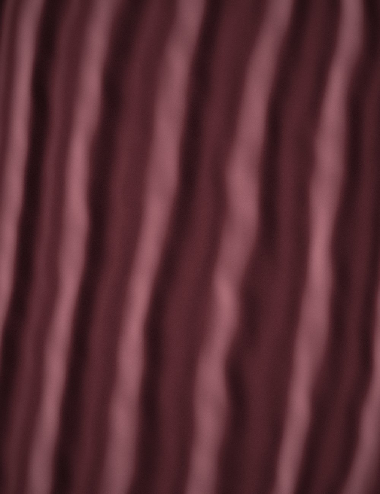

N° 02
Silk velvet, horn buttons, hand-rolled hems.
Ask the atelier about fitAutumn — Winter 2026
Silk velvet, cut on the bias and finished by hand in our Milan atelier. Seven pieces, numbered.
Chapter I
Velvet is the only cloth that changes colour as you move. Face-on it drinks the light; at the fold it gives it back. Nocturne is cut to make the most of that: long lines, few seams, and a pile laid so that every step shows a second colour.
“We cut for the moment someone turns around.”Isabella Conti, creative director

Each one arrives with its number, its maker’s initials, and a lifetime of care.
Silk velvet, horn buttons, hand-rolled hems.
Ask the atelier about fitSilk charmeuse, cut on the true bias.
Request a private fittingSilk velvet, open back, silk-lined throughout.
See it on a model, liveConcierge
Your advisor, Céline, will prepare the pieces in your size before you arrive — or bring them to you.
Choose a timeAftercare
Sent back to the hands that made it, at no charge, for as long as you own it.
Collected each spring, steamed and stored in breathable linen until autumn.
When you are ready to part with it, we take it back and find its next wearer.
Twelve showrooms
Milan · Paris · London · New York · Tokyo · Seoul · Shanghai · Dubai · Geneva · Munich · Sydney · Auckland